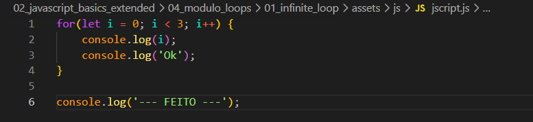

Infinite Loop
Intro
Aqui iremos ver um pouco mais sob lacos de repeticao (for).
Aqui iremos ver um pouco mais sob lacos de repeticao (for).
Nesse exemplo iremos comecar criando um laco de repeticao for ficando da seguinte forma:

Nesse caso estamos iterando o valor de i a cada repeticao enquanto i for menor que 3.
Quando estamos trabalhando com for temos que tomar cuidado para nao criar um laco de repeticao infitio, isso fara com que por exemplo que nosso navegador fique travado, nao respondendo a nem um comando e tendo que reiniciar o navegador. Isso pode ocorrer quando uma condicao nunca se cumpre